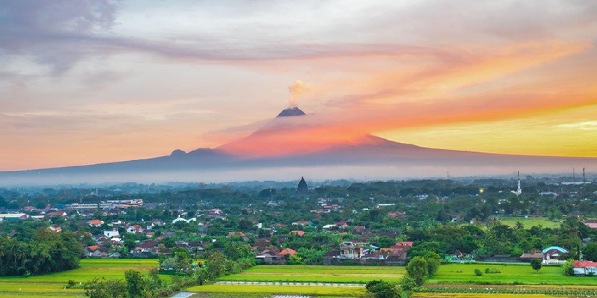
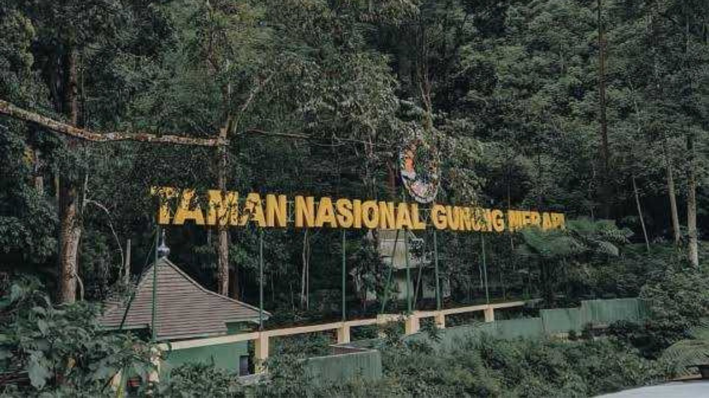
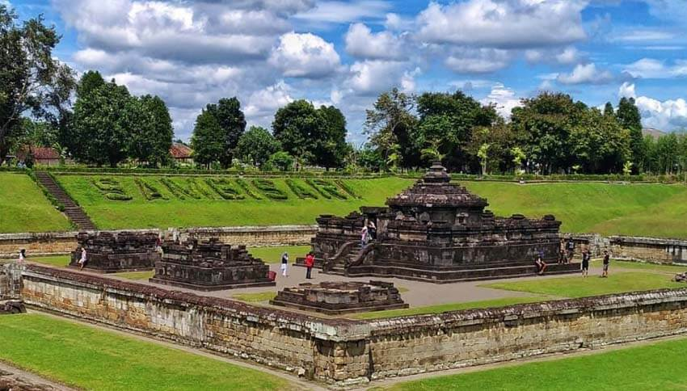
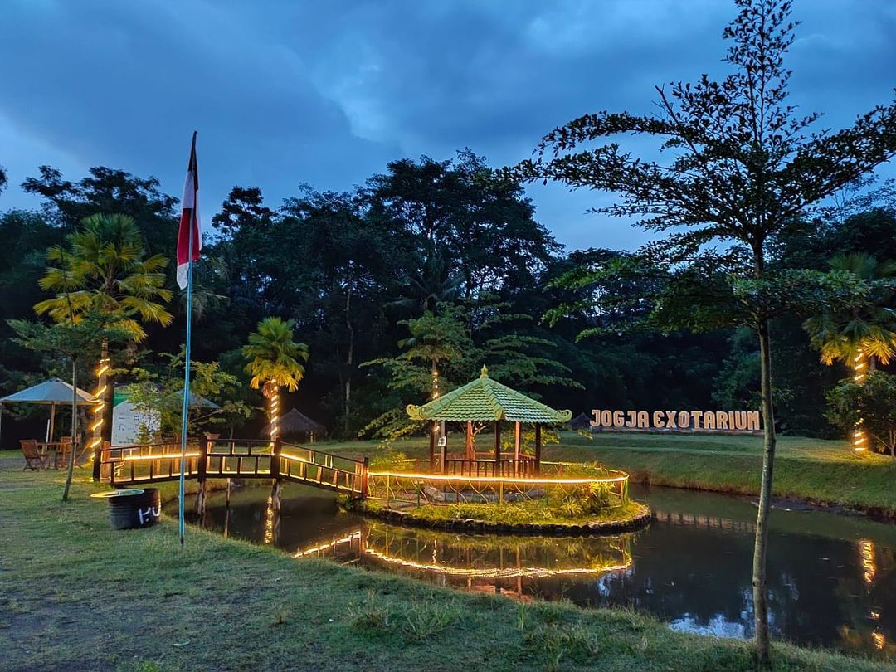

Sejarah

Mengungkap sejarah merupakan perjalanan yang rumit dan melelahkan. Setidaknya pengalaman
tersebut dapat dipetik dari upaya Dati II Sleman untuk menentukan hari jadinya. Setelah
melalui penelitian, pembahasan, dan perdebatan bertahun-tahun, akhirnya hari jadi
Kabupaten Dati II Sleman disepakati. Perda no.12 tahun 1998 tertanggal 9 Oktober 1998,
menetapkan tanggal 15 (lima belas) Mei tahun 1916 merupakan hari jadi Sleman. Di sini
perlu ditegaskan bahwa hari jadi Sleman adalah hari jadi Kabupaten Sleman, bukan
hari jadi Pemerintah Kabupaten Dati II Sleman. Penegasan ini diperlukan mengingat
keberadaan Kabupaten Sleman jauh sebelum Proklamasi 17 Agustus 1945 sebagai wujud lahirnya
negara Indonesia modern, yang memunculkan Pemerintah Kabupaten Dati II Sleman.
Keberadaan hari jadi Kabupaten Sleman memiliki arti penting bagi masyarakat dan pemerintah
daerah untuk memantapkan jati diri, sebagai landasan yang menjiwai gerak langkah ke masa
depan. Penetapan hari jadi ini akan melengkapi identitas yang saat ini dimiliki Kabupaten Sleman.
Dalam perhitungan Almanak, hari jadi Kabupaten Sleman jatuh pada hari Senin Kliwon, tanggal 12
(dua belas) Rejeb tahun Je 1846 Wuku Wayang. Atas dasar perhitungan tesebut ditentukan surya
sengkala (perhitungan tahun Masehi) Rasa Manunggal Hanggatra Negara yang memiliki arti Rasa = 6,
manunggal = 1, Hanggatra = 9, Negara = 1, sehingga terbaca tahun 1916. Sementara menurut
perhitungan Jawa (Candra Sengkala) hari jadi Kabupaten Sleman adalah Anggana Catur Salira Tunggal
yang berarti Anggana = 6, Catur = 4, Salira = 8, Tunggal = 1, sehingga terbaca tahun 1846.
Kepastian keberadaan hari jadi Kabupaten Sleman didasarkan pada Rijksblad no. 11 tertanggal
15 Mei 1916. Penentuan hari jadi Kabupaten Sleman dilakukan melalui penelaahan berbagai materi
dari berbagai sumber informasi dan fakta sejarah.
Geografis

Kabupaten Sleman keadaan tanahnya dibagian selatan relatif datar kecuali daerah perbukitan dibagian
tenggara Kecamatan Prambanan dan sebagian di Kecamatan Gamping. Makin ke utara relatif miring dan
dibagian utara sekitar Lereng Merapi relatif terjal serta terdapat sekitar 100 sumber mata air.
Hampir setengah dari luas wilayah merupakan tanah pertanian yang subur dengan didukung irigasi
teknis di bagian barat dan selatan. Topografi dapat dibedakan atas dasar ketinggian tempat dan
kemiringan lahan (lereng).
Ketinggian wilayah Kabupaten Sleman berkisar antara <100 m sd >1000 m dari permukaan laut. Ketinggian
tanahnya dapat dibagi menjadi tiga kelas yaitu ketinggian <100 m, 100–499 m, 500–999 m dan >1000 m
dari permukaan laut. Ketinggian <100 m dari permukaan laut seluas 6.203 ha atau 10,79 % dari luas
wilayah terdapat di Kecamatan Moyudan, Minggir, Godean, Prambanan, Gamping dan Berbah. Ketinggian
>100–499 m dari permukaan laut seluas 43.246 ha atau 75,32 % dari luas wilayah, terdapat di 17
Kecamatan. Ketinggian >500–999 m dari permukaan laut meliputi luas 6.538 ha atau 11,38 % dari
luas wilayah, meliputi Kecamatan Tempel, Turi, Pakem dan Cangkringan. Ketinggian >1000 m dari
permukaan laut seluas 1.495 ha atau 2,60 % dari luas wilayah meliputi Kecamatan Turi, Pakem, dan Cangkringan.
Wisata
Sebagai bagian dari wilayah Daerah Istimewa Yogyakarta, wisata Sleman adalah salah satu tempat yang
menyuguhkan wisata dengan panorama alam yang indah. Keindahan yang ada di sini membuat banyak sekali
para wisatawan yang ingin berkunjung, mulai dari lokal hingga mancanegara. Berbagai spot yang tersedia
dapat membuat siapapun yang berkunjung akan betah berlama - lama menikmatinya.
Jarak tempuh yang cukup jauh dari kota Jogja, tidak membuat wisata sleman ini menjadi tak terjamah oleh
pengunjung, justru hal ini menjadi tantangan tersendiri bagi pengunjung yang datang. Setelah sampai di
lokasi, akan terbayarkan dengan berbagai sajian wahana yang ada di tempat wisata ini.
Taman Nasional Gunung Merapi

Gunung Merapi adalah gunung berapi di bagian tengah Pulau Jawa dan merupakan salah satu gunung api
teraktif di Indonesia. Lereng sisi selatan berada dalam administrasi Kabupaten Sleman, Daerah Istimewa
Yogyakarta, dan sisanya berada dalam wilayah Provinsi Jawa Tengah, yaitu Kabupaten Magelang di sisi barat,
Kabupaten Boyolali di sisi utara dan timur, serta Kabupaten Klaten di sisi tenggara. Kawasan hutan di
sekitar puncaknya menjadi kawasan Taman Nasional Gunung Merapi sejak tahun 2004.
Taman Nasional Gunung Merapi adalah warisan alam yang berbentuk kawasan berskala nasional. Kawasan TNGM
berada pada ketinggian antara 600 - 2.968 m di atas permukaan laut dengan topografi wilayah lereng yang
landai hingga berbukit dan bergunung-gunung. Pada kawasan ini terdapat salah satu gunung berapi paling
aktif dan berbahaya di dunia yakni Gunung Merapi. Gunung Merapi diketahui sering mengalami letusan skala
kecil hingga menengah, yang sering diikuti oleh aliran piroklastik. Tingginya aktivitas vulkanik Gunung
Merapi menyebabkan ekosistem di kawasan ini memiliki tingkat kerawanan bencana yang tinggi.
Candi Prambanan

Candi Prambanan merupakan candi Hindu yang terbesar di Indonesia. Sampai saat ini belum dapat dipastikan kapan
candi ini dibangun dan atas perintah siapa, namun kuat dugaan bahwa Candi Prambanan dibangun sekitar pertengahan
abad ke-9 oleh raja dari Wangsa Sanjaya, yaitu Raja Balitung Maha Sambu. Dugaan tersebut didasarkan pada isi
Prasasti Syiwagrha yang ditemukan di sekitar Prambanan dan saat ini tersimpan di Museum Nasional di Jakarta.
Prasasti berangka tahun 778 Saka (856 M) ini ditulis pada masa pemerintahan Rakai Pikatan.
Denah asli Candi Prambanan berbentuk persegi panjang, terdiri atas halaman luar dan tiga pelataran, yaitu Jaba
(pelataran luar), Tengahan (pelataran tengah) dan Njeron (pelataran dalam). Halaman luar merupakan areal terbuka
yang mengelilingi pelataran luar. Pelataran luar berbentuk bujur dengan luas 390 m2. Pelataran ini dahulu dikelilingi
oleh pagar batu yang kini sudah tinggal reruntuhan. Pelataran luar saat ini hanya merupakan pelataran kosong. Belum
diketahui apakah semula terdapat bangunan atau hiasan lain di pelataran ini.
Candi Sambisari

Lokasi Candi Sambisari terletak di Sambisari, Purwomartani, Kalasan, Sleman. Candi Sambisari berada 6,5 metar di bawah
permukaan tanah. Pola pembagian halaman candi secara keseluruhan mirip dengan candi Prambanan, namun dalam bentuk yang
lebih sederhana. Candi Sambisari merupakan kelompok percandian yang terdiri dari sebuah candi induk dan tiga buah candi
perwara di depannya. Candi induk menghadap ke arah Barat dengan ukuran 13,65 m x 13,65 m dan tinggi keseluruhan 7,5 m.
Di dalam bilik candi utama terdapat lingga-yoni dengan cerat yoni menghadap ke arah utara. Pada sisi luar dinding tubuh
candi terdapat relung-relung yang ditempati oleh Dewi Durga (Utara), Ganesa (Timur), dan Agastya (Selatan) yang di atasnya
terdapat hiasan kepala kala, sedangkan pada kanan kiri pintu masuk ke bilik candi terdapat dua relung untuk dewa-dewa
penjaga pintu, yaitu Mahakala dan Nandiswara.
Sejarah pendirian Candi Sambisari belum dapat diketahui secara pasti karena tidak adanya bukti yang konkret. Untuk menentukan
tahun pendiriannya harus ditinjau dari beberapa segi. Dari segi arsitektur, R. Soekmono menggolongkan candi Sambisari ke
dalam abad ke 8 M. Berdasarkan batu isian yang digunakan berupa batu padas, pendirian Candi Sambisari diperkirakan semasa
dengan Candi Prambanan, Plaosan, dan Sojiwan, yaitu sekitar abad ke 9-10 M.
Berdasarkan kedua tafsiran tersebut, Soediman berpendapat bahwa candi Sambisari didirikan pada abad 9 M (± 812 - 838 M).
Pendapat tersebut didukung adanya temuan lempengan emas bertulis (prasasti), karena berdasarkan tafsiran paleografis,
Boechari berpendapat bahwa tulisan itu berasal dari sekitar abad ke 9 M. Prasasti tersebut berhuruf Jawa Kuno, berbunyi
Om siwa sthana (dibaca kembali oleh Rita MS), yang artinya Hormat, pembuatan tempat (rumah) bagi Dewa Siwa.
Candi Kalasan

Caṇḍi Kalasan merupakan sebuah Bangunan Cagar Budaya yang dikategorikan sebagai candi umat Buddha. Candi ini terletak di
Desa Tirtomartani, Kecamatan Kalasan, Kabupaten Sleman, Daerah Istimewa Yogyakarta, Indonesia.
Candi ini memiliki 52 stupa dan berada di sisi selatan jalan raya antara Surakarta dan Jogja serta sekitar 2 km dari candi
Prambanan. Pada awalnya hanya candi Kalasan ini yang ditemukan pada kawasan situs ini, namun setelah digali lebih dalam
maka ditemukan lebih banyak lagi bangunan bangunan pendukung di sekitar candi ini. Selain candi Kalasan dan bangunan-bangunan
pendukung lainnya ada juga tiga buah candi kecil di luar bangunan candi utama, berbentuk stupa.
Berdasarkan prasasti Kalasan bertarikh 778 yang ditemukan tidak jauh dari candi ini menyebutkan tentang pendirian
bangunan suci untuk menghormati Bodhisattva wanita, Tarabhawana dan sebuah vihara untuk para pendeta. Penguasa
yang memerintah pembangunan candi ini bernama Maharaja Tejapurnapana Panangkaran (Rakai Panangkaran) dari keluarga
Syailendra. Kemudian dengan perbandingan dari manuskrip pada prasasti Kelurak tokoh ini dapat diidentifikasikan
dengan Dharanindra atau dengan prasasti Nalanda adalah ayah dari Samaragrawira. Sehingga candi ini dapat menjadi
bukti kehadiran Wangsa Syailendra.
Jogja Exotarium

Jogja Exotarium adalah mini zoo atau kebun binatang mini yang memiliki berbagai koleksi satwa tetapi tidak sebanyak
dengan kebun binatang lain. Tempat ini bertujuan untuk mengembangbiakkan satwa, terutama satwa yang terancam punah.
Kebun binatang di tempat ini memiliki beberapa koleksi jenis hewan seperti reptil, pengerat, nokturnal, semi akuatik,
unggas, burung, kuda, kambing, rusa, ikan, kera, dan kura-kura. Pengunjung dapat memberi makan langsung kepada
hewan-hewan di sini.
Banyak sekali aktivitas outdoor menyenangkan yang bisa dicoba di sini. Pengunjung dapat mencoba wahana flying fox,
perosotan pelangi, becak mini, jeep, berkuda, tubing, ATV, bebek kayuh, terapi ikan, tangkap ikan, dan kolam renang.
Selain itu, tempat ini juga menyediakan fasilitas tanaman hias, taman bunga, outbond, dan juga wedding venue. Terdapat
banyak spot foto sehingga pengunjung dapat bebas berfoto di spot yang disukai.